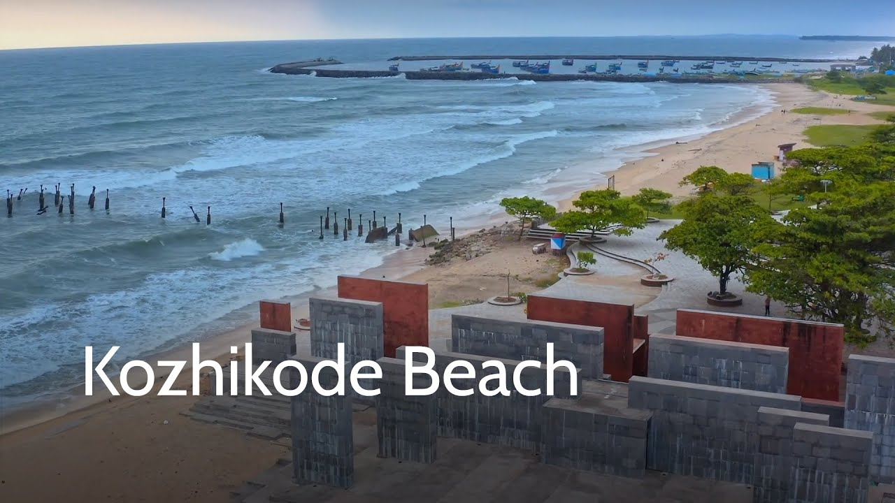
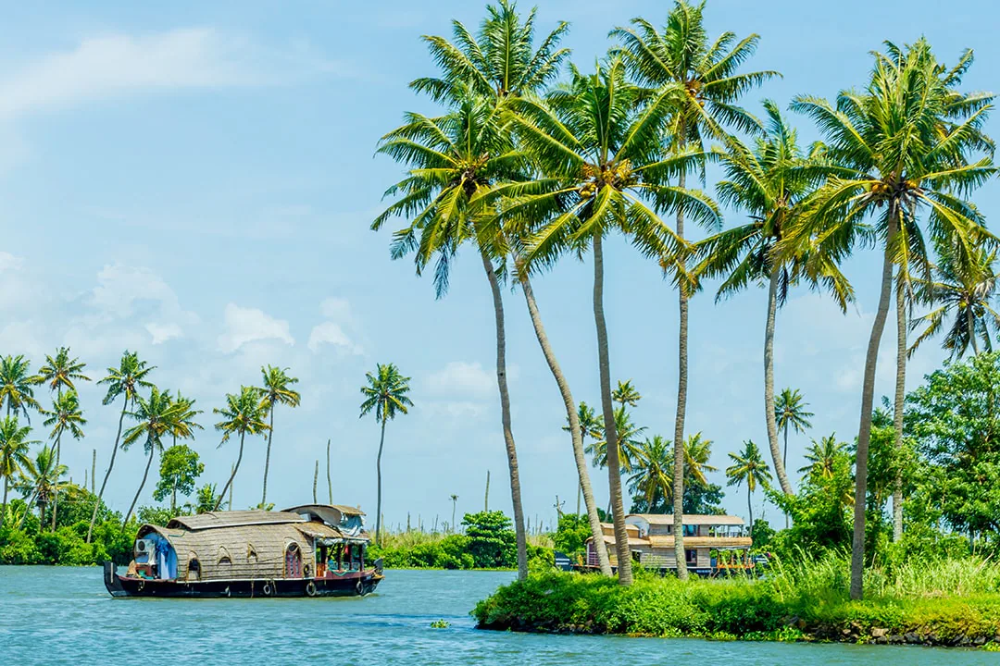

Top Destinations

Kozhikode Beach or Calicut Beach is a beach on the western side of Kozhikode, situated on the Malabar Coast of India. The beach is accessible through four road overbridges in the city. The beach has paved stones and illumination. There is one Lions Park for the children and an aquarium
Kolukkumalai is a small village in the Theni District of Tamil Nadu, on the border of Idukki District, Kerala. At 7,000 ft above sea level, it is home to the highest tea plantations in the world. The natural beauty here is intoxicating, promising a beautiful sunrise overlooking the Palani hills. The aromatic breeze in this hill-station is unique and fresh, causing the tea in the Kolukkumalai Tea Estate to be special, and guests to feel special

Get to know this 2.4-mile out-and-back trail near Kozhikode, Kerala. Generally considered a moderately challenging route. This is a popular trail for birding, hiking, and walking, but you can still enjoy some solitude during quieter times of day. The trail is open year-round and is beautiful to visit anytime.

Officially called Alappuzha, Alleppey is known for its network of canals and lagoons with beautiful backwaters and the houseboats offering overnight stays. Located in the southern part of Kerala, the coastline of Alleppey offers some of the best beaches with water sports during the dry season. Coupled with other beautiful places in Kerala like Munnar and Thekkady, Alleppey is often considered for a honeymoon or for a great family vacation.
Alleppey's palm-fringed inter-connect network of canal backwaters attracts a lot of tourists from all over the world. Kuttanad, also called the 'Rice Bowl of Kerala' covers a large part of Allapuzha and is home to lush green paddy fields, lakes and backwaters.
There are plenty of houseboats, homestays, and rejuvenating Ayurvedic resorts that make staying in Alleppey brilliant. The houseboats pass through the serene backwaters, where you can catch glimpses of green paddy fields, choir-making activities, and witness the life of locals in Kerala. Alleppey is also dotted with famous temples like Chettikulangara Devi Temple and Mullakkal Temple.
Be sure to catch a traditional snake boat race on the Punnamada Lake in the months of August and September and try out some toddy (palm wine) at a local toddy shop for adding a touch of authenticity to your travel experience in Allepey.
About Kerala

Kerala, southwestern coastal state of India. It is a small state, constituting only about 1 percent of the total area of the country. Kerala stretches for about 360 miles (580 km) along the Malabar Coast, varying in width from roughly 20 to 75 miles (30 to 120 km). It is bordered by the states of Karnataka (formerly Mysore) to the north and Tamil Nadu to the east and by the Arabian Sea to the south and west; it also surrounds Mahe, a segment of the state of Puducherry, on the northwestern coast. The capital is Thiruvananthapuram (Trivandrum).